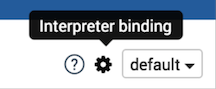

Scalding Interpreter for Apache Zeppelin
Scalding is an open source Scala library for writing MapReduce jobs.
Building the Scalding Interpreter
You have to first build the Scalding interpreter by enable the scalding profile as follows:
mvn clean package -Pscalding -DskipTests
Enabling the Scalding Interpreter
In a notebook, to enable the Scalding interpreter, click on the Gear icon,select Scalding, and hit Save.

Configuring the Interpreter
Scalding interpreter runs in two modes:
- local
- hdfs
In the local mode, you can access files on the local server and scalding transformation are done locally.
In hdfs mode you can access files in HDFS and scalding transformation are run as hadoop map-reduce jobs.
Zeppelin comes with a pre-configured Scalding interpreter in local mode.
To run the scalding interpreter in the hdfs mode you have to do the following:
Set the classpath with ZEPPELIN_CLASSPATH_OVERRIDES
In conf/zeppelinenv.sh, you have to set ZEPPELINCLASSPATH_OVERRIDES to the contents of 'hadoop classpath' and directories with custom jar files you need for your scalding commands.
Set arguments to the scalding repl
The default arguments are: "--local --repl"
For hdfs mode you need to add: "--hdfs --repl"
If you want to add custom jars, you need to add: "-libjars directory/:directory/"
For reducer estimation, you need to add something like: "-Dscalding.reducer.estimator.classes=com.twitter.scalding.reducer_estimation.InputSizeReducerEstimator"
Set max.open.instances
If you want to control the maximum number of open interpreters, you have to select "scoped" interpreter for note option and set max.open.instances argument.
Testing the Interpreter
Local mode
In example, by using the Alice in Wonderland tutorial, we will count words (of course!), and plot a graph of the top 10 words in the book.
%scalding
import scala.io.Source
// Get the Alice in Wonderland book from gutenberg.org:
val alice = Source.fromURL("http://www.gutenberg.org/files/11/11.txt").getLines
val aliceLineNum = alice.zipWithIndex.toList
val alicePipe = TypedPipe.from(aliceLineNum)
// Now get a list of words for the book:
val aliceWords = alicePipe.flatMap { case (text, _) => text.split("\\s+").toList }
// Now lets add a count for each word:
val aliceWithCount = aliceWords.filterNot(_.equals("")).map { word => (word, 1L) }
// let's sum them for each word:
val wordCount = aliceWithCount.group.sum
print ("Here are the top 10 words\n")
val top10 = wordCount
.groupAll
.sortBy { case (word, count) => -count }
.take(10)
top10.dump
%scalding
val table = "words\t count\n" + top10.toIterator.map{case (k, (word, count)) => s"$word\t$count"}.mkString("\n")
print("%table " + table)
If you click on the icon for the pie chart, you should be able to see a chart like this:

HDFS mode
Test mode
%scalding
mode
This command should print:
res4: com.twitter.scalding.Mode = Hdfs(true,Configuration: core-default.xml, core-site.xml, mapred-default.xml, mapred-site.xml, yarn-default.xml, yarn-site.xml, hdfs-default.xml, hdfs-site.xml)
Test HDFS read
val testfile = TypedPipe.from(TextLine("/user/x/testfile"))
testfile.dump
This command should print the contents of the hdfs file /user/x/testfile.
Test map-reduce job
val testfile = TypedPipe.from(TextLine("/user/x/testfile"))
val a = testfile.groupAll.size.values
a.toList
This command should create a map reduce job.
Future Work
- Better user feedback (hadoop url, progress updates)
- Ability to cancel jobs
- Ability to dynamically load jars without restarting the interpreter
- Multiuser scalability (run scalding interpreters on different servers)